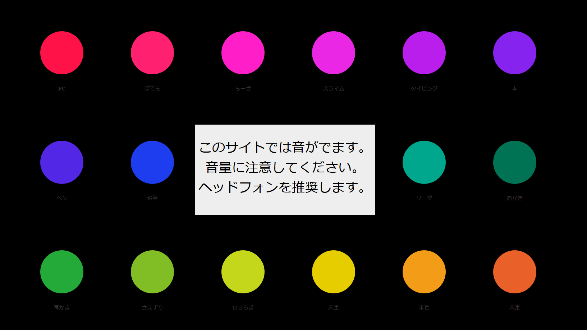
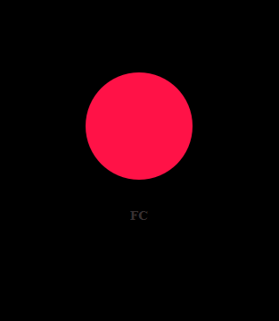
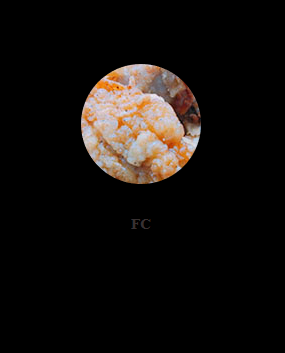
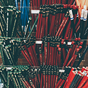
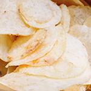
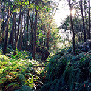

a s m r s
https://yeg20ll.github.io/asmrsWEB サイトの課題作品で作成しました。
色々な音が出るサイトを作りたいと思ったのがきっかけで作りはじめ、
当時話題になっていた音フェチのサイトに最終的に決めました。
目でも楽しめ、シンプルで分かりやすい直観操作がデザインコンセプトです。
制作期間：1ヶ月 撮影機材：一眼レフ キーワード 音フェチ× WEB サイト



サイトマップ
サイトを開くと最初に注意書きを表示し、しばらくたつと自然に消えるようにしました。
いきなり音が出るのを防ぎます。
 レイアウト
それぞれの●の部分にカーソルを合わせると●に中が画像に代わり音が出ます。
画像からカーソルを話すと元の●に戻り音も止まります。
 